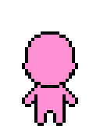
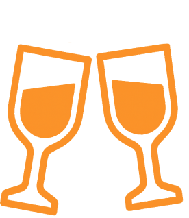
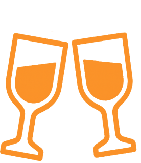

What's MetaLeaf
あなたの目的に合わせて、つながる場所
User's opinions
参加者の声

参加したものの、最初は誰に声をかけていいのかわからず
戸惑っていました。
そんなとき、偶然同じ名前の方からダイレクトメッセージをもらい、話すきっかけをつくってもらえたんです。
そこから自然と輪が広がり、ほかの方のおしゃべりに混ぜてもらいながら作業したり、孤独だった自宅での時間が、誰かとつながれる楽しい時間に変わりました。
わからないところは画面共有をしながら会話ができるので、 質問が苦手な私でも気軽に相談できて、しっかり解決へと 導いてもらえました。
そんなとき、偶然同じ名前の方からダイレクトメッセージをもらい、話すきっかけをつくってもらえたんです。
そこから自然と輪が広がり、ほかの方のおしゃべりに混ぜてもらいながら作業したり、孤独だった自宅での時間が、誰かとつながれる楽しい時間に変わりました。
わからないところは画面共有をしながら会話ができるので、 質問が苦手な私でも気軽に相談できて、しっかり解決へと 導いてもらえました。
-
毎週月曜日セミナー開催
毎週いろんな方がお話を聞かせてくれます！ 参加型のものもあるのでしっかり自分ごとに落とし込んで身に付きます！
 -
目的別相談部屋
自身の学習状況に応じて相談できる部屋があります。 必然的に同じレベル感の方が集まるので、 そこで知り合い一緒に勉強をしている方もいます！
 

-
毎日オープン
仕事や子育てなど様々な家庭環境で、 確保できる時間がバラバラでも大丈夫！ AM5:00~AM1:00まで開いているから 自分の好きな時間に参加できます。


-
定期的にオンライン飲み会開催
メタリーフを使ってオンライン飲み会を開催 しています。 今まで話したことない人と出会えるチャンス！ グループを分けて自己紹介やゲームをしたり、 初めましてでもしっかり話せる環境を作っていますので 安心して参加できます！
 

-
いつでも誰かとつながれる
今まで一人で学習し、悩んでいた時間がここに参加することで変わります。 同じように学んでいる仲間や講師とつながれる環境があるので「人に聞く」という選択肢が生まれ、 モチベーションが保ちやすくなります！